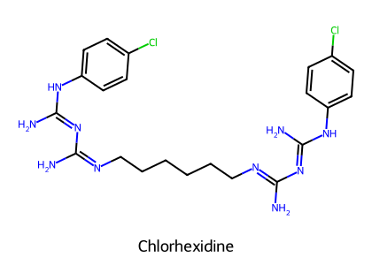
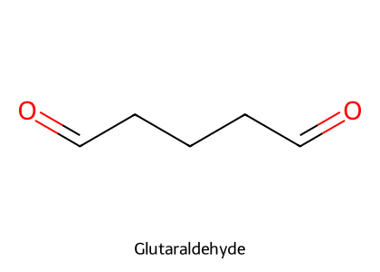
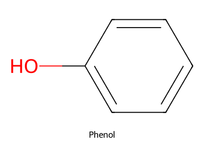
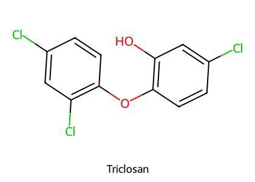
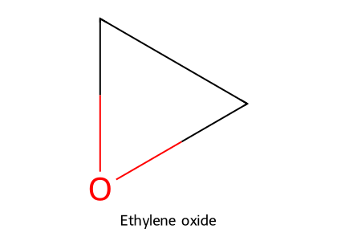

重點摘要
三個名詞先分清楚：清潔劑用界面活性劑把髒污與有機物移除——這是第一步，因為有機物會讓後續的化學藥劑失效；防腐劑用在活組織（皮膚、黏膜、傷口），要在效果與組織安全之間取捨；消毒劑用在無生命物體（桌面、籠子、器械），可以比較強。滅菌才會殺死細菌芽孢。每一類藥劑都要記：殺什麼、不殺什麼（芽孢、無套膜病毒）、會不會被有機物或其他藥劑失活、對誰有毒。
- 先清潔再消毒（first step rule）：有機物（bioburden）會讓多數藥劑失效。
- Spaulding 分類：穿透皮膚黏膜的 critical items 要滅菌；接觸完整黏膜的 semicritical 要高階消毒；只接觸完整皮膚的 noncritical 用低到中階消毒。
- 肥皂（陰離子）與 QAC（陽離子）混用會沉澱；chlorhexidine 也被肥皂與陰離子清潔劑失活。
- 酒精：70% 乙醇或 50% 異丙醇；殺細菌、結核菌、有套膜病毒；對芽孢與無套膜病毒無效。
- 碘：廣效（包括芽孢）；povidone-iodine 稀釋到 1% 殺菌最佳；全身吸收可造成代謝性酸中毒、腎衰竭、甲狀腺異常（腎病與新生兒注意）。
- 氯（次氯酸鹽）：有效成分是 HOCl，pH < 8 時比例高、效果好；被有機物失活、怕光、與酸混合產生氯氣；對 Microsporum canis 很有效。
- Chlorhexidine：對 G(+) 最強、病毒與芽孢最弱；持續作用、不受有機物影響、毒性極低；用生理食鹽水稀釋會沉澱。
- 酚類對貓特別危險（葡萄糖醛酸結合能力差）；3% H₂O₂ 對纖維母細胞有毒，不適合常規傷口照護；PPMS（Virkon® S）對小病毒等頑強病毒非常有效、不受有機物失活。
本頁藥劑總覽
| 藥劑 | 類別／機轉 | 抗菌譜 | 用途 | 主要限制 |
|---|---|---|---|---|
| 肥皂 | 陰離子界面活性劑（R-COO⁻Na⁺），乳化溶解 | G(+)、抗酸菌 | 清潔 | 被 Ca²⁺、陽離子清潔劑失活；與 QAC 混合沉澱 |
| QACs（四級銨） | 陽離子界面活性劑 | — | 獸醫常用清潔／消毒 | 受有機物干擾、被材質吸附 |
| Ethanol 70%、Isopropanol 50% | 脂質溶劑＋蛋白質變性 | G(+)、G(−)、結核菌、有套膜病毒 | 皮膚、表面 | 芽孢、無套膜病毒無效；蛋白質固定；易燃 |
| 碘酊 | 1–2% 碘溶於 70% 乙醇 | 廣效（含芽孢） | 皮膚 | 刺激、染色、腐蝕金屬、延遲傷口癒合 |
| Povidone-iodine | 碘與載體複合（iodophor），緩慢釋放 | 廣效 | 術前、傷口（稀釋到 1%） | 全身吸收：酸中毒、腎衰竭、甲狀腺異常 |
| 次氯酸鈉（漂白水） | 形成 HOCl：抑制酵素、蛋白變性、核酸失活 | 細菌、黴菌（M. canis）、病毒、原蟲 | 籠舍、乳品設備、地板；稀釋後用於犬表淺膿皮症 | 有機物失活、怕光、與酸產生氯氣、腐蝕 |
| N-halamines | 新型鹵素 | 殺細菌、黴菌、病毒、原蟲 | — | 穩定、不腐蝕 |
| Chlorhexidine | Biguanide：破壞細胞膜、細胞質沉澱、抑制酵素 | G(+) 最強；G(−)、黴菌、結核菌；病毒與芽孢最弱 | 術前刷手（4%）、傷口沖洗、乳頭浸泡 | 被肥皂、陰離子清潔劑失活；與 saline 沉澱 |
| PHMB | 聚合型 biguanide | MRSA、綠膿桿菌、馬腺疫鏈球菌 | 洗耳液、傷口敷料、黏膜 | — |
| Formaldehyde／Formalin | 烷化（蛋白質胺基與硫氫基） | 細菌、芽孢、黴菌、病毒 | 消毒、氣體燻蒸 | 不可作防腐劑；刺激；潛在致癌 |
| Glutaraldehyde | 二醛，烷化 RNA、DNA、蛋白質 | 比 formaldehyde 更強，含芽孢 | 器械高階消毒 | 不可作防腐劑；刺激；需 PPE |
| H₂O₂ 3% | 產生羥自由基 | 殺細菌、病毒、黴菌 | — | 對纖維母細胞有毒 |
| AHP（加速型過氧化氫） | H₂O₂＋界面活性劑＋穩定劑 | 比一般 H₂O₂ 強 | 診療台、籠子、高接觸表面 | — |
| PPMS（Virkon® S） | 過氧單硫酸鉀（氧化劑） | G(+)、G(−)、病毒（小病毒）、黴菌、黴漿菌 | 環境消毒 | 溶液約 1 週有效；不被有機物失活 |
| Phenol（石炭酸） | 穿透破壞細胞壁 | 葡萄球菌、綠膿桿菌、結核菌、黴菌、親脂性病毒、部分寄生蟲卵 | 非 critical 物品 | 毒性與腐蝕性強，不再作防腐劑；貓敏感 |
| Triclosan | Bisphenol；低濃度抑制 enoyl-ACP reductase，高濃度破壞膜 | G(+)、G(−)、黴菌、酵母 | 刷手液、肥皂、洗毛精、塑膠 | — |
| Ethylene oxide | 氣體滅菌 | 含芽孢 | 器械滅菌 | 高度易燃、刺激；只用於無生命物體 |
| H₂O₂ 氣體電漿 | 真空＋射頻產生活性離子 | 含芽孢 | 器械滅菌 | 週轉快、無毒性殘留 |
| Formaldehyde gas | 氣體 | 含芽孢；相對濕度 <50% 效果最好 | 醫院布品、家禽與食品業終末消毒 | — |
清潔、防腐、消毒與滅菌重要
| 清潔劑 Cleansers | 防腐劑 Antiseptics | 消毒劑 Disinfectants | |
|---|---|---|---|
| 對象 | 髒污、有機物與污染微生物 | 活組織（皮膚、黏膜、傷口） | 無生命物體（桌面、籠子、器械） |
| 目標 | 物理移除與溶解大量污染 | 減少微生物數量、預防感染 | 消滅大部分或全部病原，不含芽孢 |
| 機轉 | 界面活性劑乳化油脂髒污 | 非專一性破壞細胞膜或酵素 | 不同程度的化學或物理作用 |
| 臨床角色 | 第一步，讓後續步驟效果最大 | 天然防禦受損時（手術） | 依風險（Spaulding）與等級分類 |
| 理想特性 | 溶解力好；與水和表面相容 | 廣效；效果與安全的平衡 | 快速、不腐蝕、在有機物中穩定 |
| 例子 | 肥皂、QACs | 酒精、chlorhexidine、碘 | 酒精、醛類、酚類 |
- 防禦機制受損：術後傷口、放置導管或植入物
- 免疫受損：免疫缺陷、化療
- 極端年齡（很老或很小）
- 大面積皮膚損傷：嚴重燒燙傷、開放性傷口
- 廣效、快速
- 在有機物存在下仍有效
- 可與清潔劑併用，不腐蝕金屬、不傷橡膠塑膠
- 低毒、便宜、無味、易用
- 表面有殘留活性
消毒等級
| 等級 | 可消滅 | 限制 |
|---|---|---|
| 高階 | 所有微生物 | 高濃度細菌芽孢時可能失敗 |
| 中階 | 抗酸菌（結核菌）、大部分病毒、黴菌 | 不一定殺死芽孢 |
| 低階 | 大部分細菌、部分病毒與黴菌 | 不殺結核菌與芽孢；通常 <10 分鐘 |
Spaulding 分類（1968）
| 物品 | 接觸 | 要求 | 例子（臨床推理） |
|---|---|---|---|
| Critical | 進入或穿透皮膚黏膜 | 滅菌 | 手術器械、植入物、導管 |
| Semicritical | 接觸完整黏膜 | 高階消毒 | 內視鏡、氣管內管、喉鏡 |
| Noncritical | 只接觸完整皮膚 | 低到中階消毒 | 診療台、聽診器、籠子 |
滅菌殺死所有微生物（含芽孢）；化學滅菌劑是 EPA 登記、通常可在 10 小時內殺死包括芽孢在內所有感染性生物的藥劑。消毒方式包括表面消毒與浸泡消毒。
界面活性劑
| 類別 | 代表 | 重點（講義） |
|---|---|---|
| 陰離子 | 肥皂（R-COO⁻Na⁺） | 親水端＋疏水端，乳化溶解疏水性髒污、脂肪與原生質膜；抗菌譜：G(+) 與抗酸菌；被 Ca²⁺ 與陽離子清潔劑失活；與 QAC 混合會沉澱 |
| 陽離子 | 四級銨化合物（QACs） | 獸醫常用；限制：受有機物干擾、價值下降、被材質吸附（棉、紗布等會吸走有效成分） |
| 非離子 | — | 不帶電 |
肥皂（陰離子）會中和陽離子藥劑：QAC 與 chlorhexidine（陽離子）都會被肥皂與陰離子清潔劑失活。手術刷手時先把肥皂沖乾淨，再用 chlorhexidine。VPT10 也提到 chlorhexidine 會被硬水、非離子界面活性劑、無機陰離子與肥皂失活。
酒精 Alcohol
- 種類：乙醇、異丙醇。
- 雙重機轉：脂質溶劑（溶解細胞膜脂質 → 漏出）＋蛋白質變性。
- 最佳濃度：70% 乙醇或 50% 異丙醇（需要水才能讓蛋白質變性）。
- 有效：G(+)、G(−)、結核菌、有套膜病毒。
- 無效：細菌芽孢、無套膜病毒。
- 限制：受有機物干擾；蛋白質固定（把有機物黏在表面上）；材質相容性與安全性：腐蝕、高度易燃。
犬小病毒、貓泛白血球減少症病毒、貓卡里西病毒都是無套膜病毒，酒精對它們無效。處理這些病例的環境要用次氯酸鈉、PPMS 或 AHP（見第 12 節）。這是臨床常規推理，基礎是講義中「酒精對無套膜病毒無效」與「PPMS 對小病毒非常有效」兩點。
鹵素：碘與氯
碘
- 廣效：G(+)、G(−)、細菌芽孢、黴菌、大部分病毒。
- 機轉：擴散進細胞，干擾代謝反應，破壞蛋白質與核酸的結構與合成。
- 碘酊：1–2% 碘溶於 70% 乙醇；高度刺激、染色皮膚衣物、腐蝕金屬、損傷組織而延遲傷口癒合。
- Iodophors：碘與界面活性劑或載體複合；povidone-iodine 是獸醫院最常用的；優點：緩慢釋放、毒性較低、清潔與殺菌雙重作用。
稀釋到 1% 才有最大殺菌效果（稀釋後釋出更多游離碘）。VPT10：1% PI 被建議為傷口沖洗最有效、組織毒性最低的濃度；含界面活性劑的 PI 刷洗液會傷害傷口組織，不建議用於傷口。全身吸收的風險：代謝性酸中毒、腎衰竭、甲狀腺功能異常（甲亢與甲狀腺增生）——腎功能受損與新生動物要注意。
氯（次氯酸鹽）
- 機轉：抑制細胞酵素、蛋白質變性、核酸失活。
- pH 依賴：pH < 8 偏向 HOCl（有效）；pH > 8 偏向 OCl⁻（效果較差）。
- 用途：動物籠舍、乳品設備、地板消毒；對 Microsporum canis（貓皮癬菌）非常有效。
- 限制：被有機物失活、照光不穩定、與酸混合產生有毒氯氣。
- 防腐用途：一般對組織太刺激；但稀釋漂白水有時用於犬表淺膿皮症。
- N-halamines（新型鹵素）：殺細菌、黴菌、病毒、原蟲；極低鹵素濃度就有效；比傳統氯穩定、不腐蝕、易用。
家用漂白水為 5.25%（52,500 ppm），1:100–1:250 稀釋即可達有效殺菌濃度，但常建議更濃的 1:10–1:100。氯溶液會腐蝕金屬、破壞布料；因為怕光，需每天現配。用於傷口時，全濃度 Dakin's solution（0.5% NaOCl）會殺死纖維母細胞、延遲上皮化；0.025% 被報告具殺菌力且無組織毒性。
Biguanides：Chlorhexidine 與 PHMB重要

- 機轉：破壞細胞膜、細胞質沉澱、抑制酵素
- 最強：G(+)；有效：G(−)、黴菌、結核菌；最弱：病毒、細菌芽孢
- 優點：殘留活性（持續作用）、不受有機物影響、快速且安全、毒性極低
結構式依 PubChem 資料以 RDKit 自繪。
- 被肥皂與陰離子清潔劑失活。
- 用生理食鹽水（0.9% NaCl）稀釋會沉澱 → 用滅菌水稀釋。
- 劑型：4% 溶液（清潔劑基底）用於術前刷手；2% 液態泡沫；酒精／chlorhexidine 合併製劑（提高效果）。
- VPT10：殘留活性可達 5–6 小時（可能與角質層蛋白結合），在血液與有機物中仍有活性；對新生兒完整皮膚也毒性極低；傳統用途為術前防腐、傷口沖洗、乳頭浸泡。
- VPT10 傷口研究：0.05–1% chlorhexidine diacetate 沖洗的感染比 PI 少；但 >0.05% 對馬纖維母細胞致死，且在部分研究中延遲癒合比 PI 更明顯。
PHMB（Polyhexamethylene biguanide）
Chlorhexidine 的聚合型親戚。對 MRSA、綠膿桿菌、馬腺疫鏈球菌（Streptococcus equi）有效；獸醫用途：洗耳液、傷口敷料、黏膜使用。
醛類 Aldehydes

- 氣體或液體；Formalin = 37% formaldehyde（重量比）
- 機轉：烷化，針對蛋白質的胺基與硫氫基
- 抗菌譜：細菌、芽孢、黴菌、病毒
- 優點：不受有機物影響；不腐蝕金屬、油漆、布料
結構式依 PubChem 資料以 RDKit 自繪。
Glutaraldehyde（GLT）：飽和二醛，比 formaldehyde 更強的殺細菌、殺病毒、殺芽孢作用；烷化 RNA、DNA、蛋白質；表面張力低、不傷材質、在大量有機物中仍有活性 → 適合 semicritical 器械（如內視鏡）高階消毒。
- 禁止作為防腐劑（不可用在活組織）。
- 呼吸道與眼睛刺激；formaldehyde 為潛在致癌物。
- 操作時需個人防護裝備（PPE）。
氧化劑 Oxidizing Agents
| 藥劑 | 重點（講義） |
|---|---|
| H₂O₂ | 殺細菌、病毒、黴菌；產生具破壞性的羥自由基；作用短暫但穩定；3% H₂O₂ 對纖維母細胞有毒（傷口癒合必需的細胞）→ VPT10：不適合常規傷口照護 |
| AHP（Accelerated hydrogen peroxide） | H₂O₂＋界面活性劑＋穩定劑；抗菌效果明顯優於一般 H₂O₂；界面活性劑讓溶液穿透並清潔表面；殺菌時間更短 → 常用於診療台、籠子、高接觸表面 |
| PPMS（Potassium peroxymonosulfate，Virkon® S） | 粉末，加水配製；廣效：G(+)、G(−)、病毒（對小病毒等頑強病毒非常有效）、黴菌、黴漿菌；粉末穩定，配成溶液後約 1 週有效；不被有機物失活 |
酚類與 Triclosan


結構式依 PubChem 資料以 RDKit 自繪。
Phenol（石炭酸）
- 因嚴重毒性與腐蝕性，不再作為防腐劑。
- 機轉：穿透並破壞細胞壁 → 溶解。
- 有效：葡萄球菌、綠膿桿菌、結核菌、黴菌、親脂性病毒；部分寄生蟲卵與幼蟲（蛔蟲、圓線蟲、鞭蟲）。
- 限制：只建議用於 noncritical 物品；多孔材質會吸收殘留；環境問題；氣味強烈持久；會被飼料吸收。
貓對酚類特別敏感，因為葡萄糖醛酸結合路徑有限。這與貓對 acetaminophen、aspirin、posaconazole 等藥物的敏感性是同一個代謝缺陷（見 藥理學總論）。貓舍與住院區避免使用酚類消毒劑。
Triclosan
- Bisphenol；對 G(+)、G(−)、黴菌、酵母有廣效；廣泛用於刷手液、肥皂、洗毛精、除臭劑，以及塑膠（玩具）與纖維防止細菌分解。
- 濃度依賴的機轉：低濃度抑菌——競爭性抑制 enoyl-acyl carrier protein reductase，阻斷細菌脂肪酸延長；高濃度殺菌——親脂性讓它插入細菌脂雙層，擾亂磷脂排列、直接破壞細胞膜。
氣體滅菌
毒性高，只用於無生命物體，絕不用於防腐。

- Ethylene oxide（EtO）：水溶性、高度易燃；殺細菌、黴菌、酵母、病毒與芽孢；成敗關鍵為相對濕度與有機物；刺激皮膚與眼睛
- H₂O₂ 氣體電漿：真空＋射頻／微波能量產生活性離子電漿；廣效、對芽孢活性高；週轉快、無毒性殘留
- Formaldehyde gas：殺所有微生物含芽孢；相對濕度 <50% 時效果最好；傳統用於醫院布品、家禽與食品業終末消毒
結構式依 PubChem 資料以 RDKit 自繪。
臨床整合：場景與選擇
本節把講義內容套到院內常見場景。各藥劑特性出自講義與 VPT10；場景對應屬臨床推理，實際流程以院內感控規範與產品標示為準。
| 場景 | 建議藥劑 | 理由與注意 |
|---|---|---|
| 犬小病毒、貓泛白、卡里西病例的籠舍 | 次氯酸鈉、PPMS（Virkon® S）、AHP | 無套膜病毒；酒精、QAC 效果差；先清除糞便嘔吐物（漂白水會被有機物失活） |
| 貓皮癬菌（M. canis）環境 | 次氯酸鈉 | 講義：對 M. canis 非常有效 |
| 術前皮膚準備 | Chlorhexidine 或 povidone-iodine，常配合酒精 | Chlorhexidine 有殘留活性、不受有機物影響；先沖淨肥皂 |
| 傷口沖洗 | 稀釋的 chlorhexidine 或 1% povidone-iodine；許多情況生理食鹽水即可 | Chlorhexidine 不可用 saline 稀釋（沉澱）；避免 3% H₂O₂、碘酊、全濃度漂白水、含界面活性劑的刷洗液（損傷纖維母細胞） |
| 耳道沖洗 | PHMB | 講義：洗耳液用途 |
| 內視鏡等 semicritical 器械 | Glutaraldehyde 等高階消毒 | 需 PPE；不可接觸組織 |
| 手術器械 | 滅菌（EtO、H₂O₂ 氣體電漿等） | Critical items |
| 診療台、高接觸表面 | AHP、QAC | 先清潔 |
病患相關的禁忌
| 病患 | 避免或謹慎 | 理由 |
|---|---|---|
| 貓 | 酚類消毒劑 | 葡萄糖醛酸結合能力差 |
| 腎功能不全、新生動物 | 大面積或長期 povidone-iodine | 全身吸收：酸中毒、腎衰竭、甲狀腺異常 |
| 開放傷口 | 3% H₂O₂、碘酊、高濃度次氯酸鈉、醛類 | 組織毒性、延遲癒合；醛類禁作防腐劑 |
| 甲狀腺疾病的動物 | 大量碘劑 | 碘吸收影響甲狀腺（見 甲狀腺） |
漂白水不可與酸性清潔劑混合（氯氣）；醛類與 EtO 需通風與 PPE；酒精與 EtO 易燃。
考點整理
手邊的課程考古（2025 期末、內分泌考古、藥理下期中考古）沒有消毒劑題目；本講義日期為 2026 年，屬新加入的範圍。
以下是依講義與教科書推測的方向，並非出自歷屆國考題目：防腐劑與消毒劑的定義差異；Spaulding 分類；酒精的最佳濃度與對芽孢、無套膜病毒無效；HOCl 的 pH 依賴性與漂白水的限制；povidone-iodine 1% 稀釋與全身毒性；chlorhexidine 的抗菌譜、優點與 saline 沉澱；醛類禁作防腐劑；貓對酚類敏感；PPMS 對小病毒有效；氣體滅菌的濕度條件。
學習重點整理
| 藥劑 | 殺芽孢？ | 無套膜病毒？ | 有機物影響 | 一句話 |
|---|---|---|---|---|
| 酒精 | 否 | 否 | 受影響 | 70% 乙醇；易燃 |
| 碘 | 是 | 大部分病毒有效 | — | PI 稀釋 1%；全身毒性 |
| 次氯酸鈉 | — | 有效 | 失活 | HOCl、pH <8；怕光；不可混酸 |
| Chlorhexidine | 最弱 | 最弱 | 不受影響 | 殘留活性；saline 沉澱；肥皂失活 |
| Glutaraldehyde | 是 | 是 | 不受影響 | 高階消毒；禁作防腐 |
| PPMS | — | 有效（小病毒） | 不受影響 | 溶液 1 週 |
| 酚類 | — | 親脂病毒 | — | 貓禁用 |
| EtO | 是 | 是 | 受影響 | 滅菌；濕度關鍵；易燃 |
「—」表示講義未明確說明。